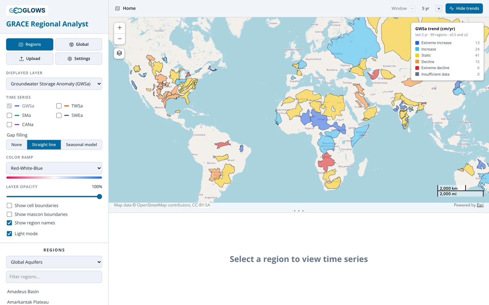
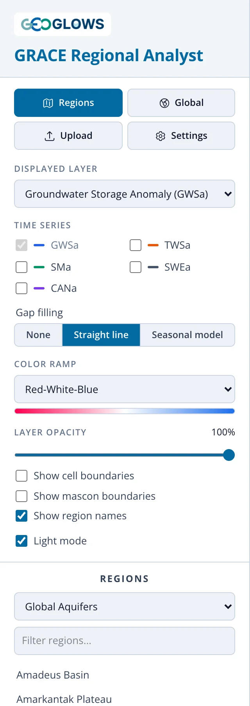
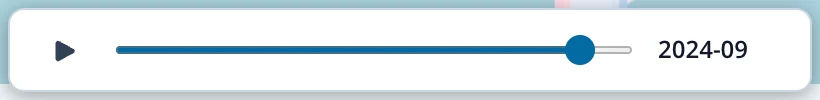
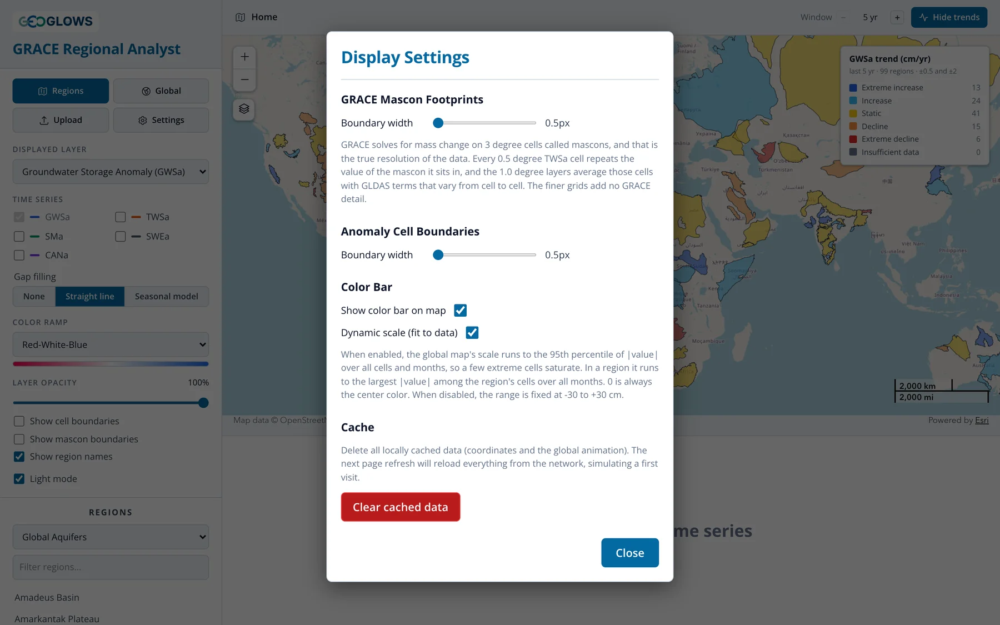

L’Interface de l’Application
Ouvrir l’application
Ouvrez apps.geoglows.org/grace-anomalies dans une version récente de Chrome, Edge, Firefox ou Safari. Rien n’est à installer et aucun identifiant n’est demandé. La première visite télécharge les données des couches par défaut, ce qui peut prendre quelques secondes sur une connexion lente ; ensuite, l’application en conserve une copie dans le navigateur et s’ouvre rapidement.

La fenêtre comporte trois parties : le panneau de contrôle à gauche, la carte en haut à droite et le panneau du graphique sous la carte. Faites glisser les trois points situés entre la carte et le graphique pour agrandir l’un ou l’autre ; double-cliquez dessus pour rétablir la répartition par défaut.
Panneau de contrôle

De haut en bas :
- Regions / Global. Bascule entre la vue régionale, qui affiche les contours des régions et analyse une région à la fois, et la vue globale, qui anime le monde entier. Cliquer sur Regions lorsqu’une région est ouverte ramène à la vue d’ensemble.
- Upload. Charge votre propre limite de région depuis un fichier GeoJSON (voir Vue Régionale).
- Settings. Paramètres d’affichage, décrits plus bas.
- Displayed layer. La composante du stockage affichée sur la carte et tracée dans le graphique :
- Groundwater Storage Anomaly (GWSa, anomalie de stockage des eaux souterraines), par défaut
- Total Water Storage Anomaly (TWSa, anomalie de stockage total en eau)
- Soil Moisture Anomaly (SMa, anomalie d’humidité du sol)
- Snow Water Equivalent Anomaly (SWEa, anomalie d’équivalent en eau de la neige)
- Canopy Water Storage Anomaly (CANa, anomalie de stockage d’eau de la canopée)
- Time series. Cochez d’autres composantes pour les ajouter au graphique à des fins de comparaison. La couche affichée est toujours tracée (voir Vue Régionale).
- Gap filling. Ce que fait le graphique aux mois sans données GRACE. None interrompt la courbe à chaque lacune, Straight line relie les mois situés de part et d’autre, et Seasonal model comble les lacunes avec des valeurs estimées à partir du reste de la série, tracées en tirets avec des marqueurs creux (voir Lacunes dans les Données). Ce réglage ne modifie que le graphique, jamais le fichier CSV téléchargé.
- Color ramp. Six palettes. Viridis, Cividis, Brown-Teal et Purple-Green sont adaptées aux personnes ayant un trouble de la vision des couleurs.
- Layer opacity. Atténue les mailles d’anomalie pour laisser voir le fond de carte.
- Show cell boundaries / Show mascon boundaries. Affiche le contour des mailles de la grille, ou des mascons GRACE de 3° qui déterminent la résolution réelle des données.
- Show region names. Affiche le nom des régions une fois le zoom suffisant.
- Light mode. Bascule entre le thème clair et le thème sombre.
- Regions. Choisissez un jeu de régions, filtrez-le par nom et cliquez sur un nom pour analyser cette région.
Carte
La carte comporte des boutons de zoom et un menu de fonds de carte (l’icône des couches sous les boutons de zoom) proposant les fonds OpenStreetMap, topographique, imagerie, rues, gris clair, gris foncé et relief. Une barre d’échelle se trouve en bas à droite. La barre de couleurs en haut à droite donne l’échelle des mailles d’anomalie, toujours centrée sur zéro ; la légende des tendances apparaît au-dessus lorsque les tendances sont affichées.
Le contrôle temporel en bas de la carte permet de parcourir les mois :

Appuyez sur lecture pour lancer l’animation, ou faites glisser le curseur. Le curseur ne s’arrête que sur les mois disposant de données GRACE. Le mois en cours est aussi repéré sur le graphique par une ligne rouge en tirets.
Barre d’en-tête
Le fil d’Ariane à gauche indique où vous vous trouvez : Home (la vue d’ensemble), un nom de région, Global map ou les coordonnées d’une maille sélectionnée. Cliquez sur Home pour revenir à la vue d’ensemble. À droite, Analyze trends / Hide trends active ou désactive la classification des tendances, et le sélecteur Window fixe la période sur laquelle la tendance est calculée. Voir Analyse des Tendances.
Paramètres

- GRACE mascon footprints et anomaly cell boundaries : épaisseur des traits des deux couches de contours.
- Show color bar on map : masque ou affiche la barre de couleurs.
- Dynamic scale (fit to data) : lorsque cette option est activée, l’échelle de couleurs s’ajuste aux données affichées, de sorte que les petites anomalies restent visibles. Dans une région, elle s’ajuste à la plus grande valeur absolue des mailles de la région sur toute la série ; dans la vue globale, elle s’ajuste au 95e centile des valeurs absolues, afin que quelques mailles extrêmes n’écrasent pas le reste de la carte. Désactivez-la pour utiliser une échelle fixe de −30 à +30 cm, préférable pour comparer des captures d’écran de différentes régions.
- Clear cached data : supprime la copie des données que l’application conserve dans votre navigateur. La visite suivante télécharge à nouveau l’ensemble des données. Utilisez cette option si l’application se comporte de façon anormale après une mise à jour des données.
Les paramètres sont conservés jusqu’à la fermeture de la page. Le thème clair ou sombre et la taille du panneau du graphique sont mémorisés d’une visite à l’autre.